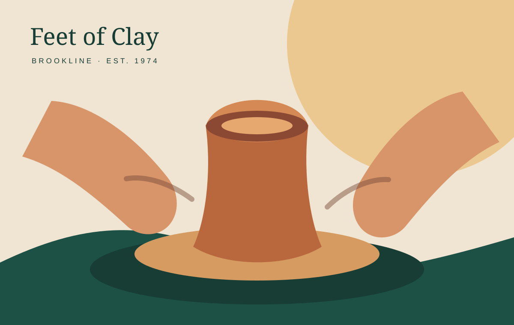

01
Friday Wheel
A one-night wheel-throwing introduction with a demonstration and guided practice.
A cooperative studio for first-time makers, returning students and independent ceramic artists—steps from the Brookline Village T.

The current studio offers quick introductions, multi-week learning and long-term member access. Pick the route that matches your experience; availability and registration remain on the official Feet of Clay pages.
Friday Wheel is a single-session introduction at 7pm. It starts with a throwing demonstration, then gives you time to practice. The official site currently lists it at $45.
Class registration changes throughout the year. The current official page says groups are capped at eight students and includes clay, glazes and firing in multi-session tuition.
A one-night wheel-throwing introduction with a demonstration and guided practice.
Two sessions: throw on the wheel, then trim, decorate and glaze. Instruction, materials and firing are included.
Five-to-ten-week adult classes for beginners and returning makers, with the same weekly time and small groups.
Wheel throwing and handbuilding for young makers, with clay, firing, tools and instruction included.
Give someone a reason to sit at the wheel and make their first piece by hand.
Free public handbuilding connects the studio to Brookline’s Art in the Village evenings.
Membership is currently full, and the official site reports a wait of about one year. The studio publishes conflicting prices, so this concept leaves the fee for confirmation rather than guessing.
Read membership detailsGeneral members receive 24-hour access to work areas, wheels, tools, molds, glaze room and spray booth.
The current membership page lists more than forty glazes and electric kiln firing to cone 6.
Members can apply to the studio’s spring and winter shows and sales, subject to available space.
Feet of Clay is more than classes: public evenings, artist shows and a working cooperative give Brookline neighbors different ways to enter the studio.
21 Station Street
Brookline, MA 02445
Just off Harvard Street, steps from the Brookline Village T station on the Green Line D branch.
617-731-3262
katfeetofclay@gmail.com
See what’s happening at the studio.
The official events calendar is the source for current dates and capacity.
View official events ↗